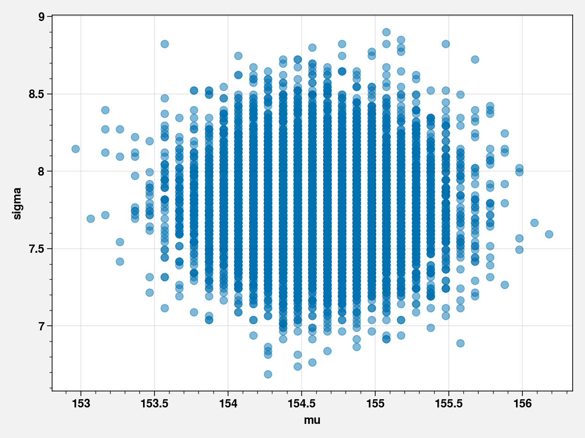
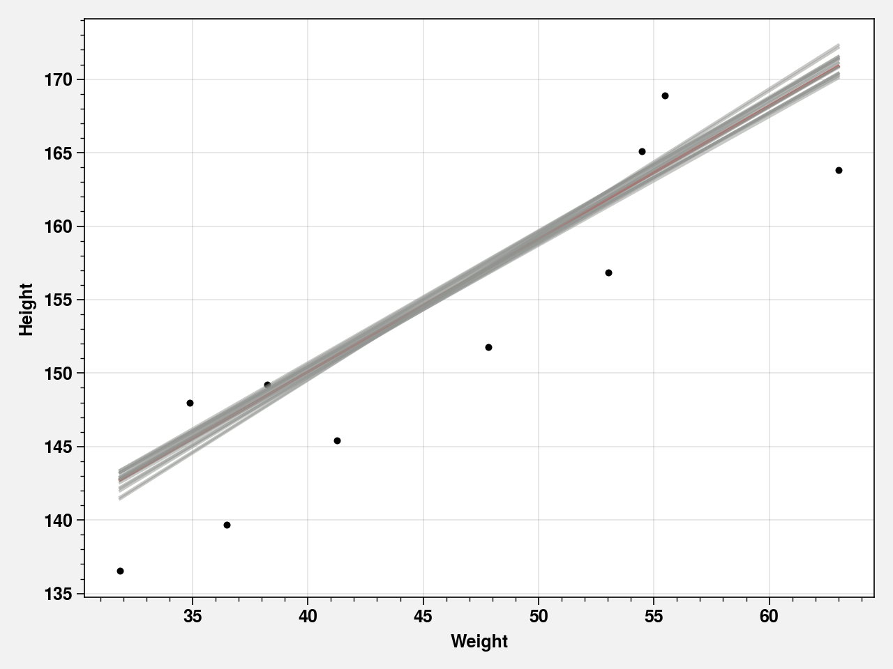

35. Chapter 04 - Linear Models¶
!pip install torch torchvision pyro-ppl proplot black blackcellmagic
Requirement already satisfied: torch in /opt/hostedtoolcache/Python/3.7.8/x64/lib/python3.7/site-packages (1.5.0)
Requirement already satisfied: torchvision in /opt/hostedtoolcache/Python/3.7.8/x64/lib/python3.7/site-packages (0.7.0)
Requirement already satisfied: pyro-ppl in /opt/hostedtoolcache/Python/3.7.8/x64/lib/python3.7/site-packages (1.3.1)
Requirement already satisfied: proplot in /opt/hostedtoolcache/Python/3.7.8/x64/lib/python3.7/site-packages (0.6.1)
Requirement already satisfied: black in /opt/hostedtoolcache/Python/3.7.8/x64/lib/python3.7/site-packages (20.8b1)
Requirement already satisfied: blackcellmagic in /opt/hostedtoolcache/Python/3.7.8/x64/lib/python3.7/site-packages (0.0.2)
Requirement already satisfied: numpy in /opt/hostedtoolcache/Python/3.7.8/x64/lib/python3.7/site-packages (from torch) (1.17.0)
Requirement already satisfied: future in /opt/hostedtoolcache/Python/3.7.8/x64/lib/python3.7/site-packages (from torch) (0.18.2)
Requirement already satisfied: pillow>=4.1.1 in /opt/hostedtoolcache/Python/3.7.8/x64/lib/python3.7/site-packages (from torchvision) (7.2.0)
Requirement already satisfied: pyro-api>=0.1.1 in /opt/hostedtoolcache/Python/3.7.8/x64/lib/python3.7/site-packages (from pyro-ppl) (0.1.2)
Requirement already satisfied: opt-einsum>=2.3.2 in /opt/hostedtoolcache/Python/3.7.8/x64/lib/python3.7/site-packages (from pyro-ppl) (3.3.0)
Requirement already satisfied: tqdm>=4.36 in /opt/hostedtoolcache/Python/3.7.8/x64/lib/python3.7/site-packages (from pyro-ppl) (4.48.2)
Requirement already satisfied: matplotlib in /opt/hostedtoolcache/Python/3.7.8/x64/lib/python3.7/site-packages (from proplot) (3.2.1)
Requirement already satisfied: mypy-extensions>=0.4.3 in /opt/hostedtoolcache/Python/3.7.8/x64/lib/python3.7/site-packages (from black) (0.4.3)
Requirement already satisfied: typed-ast>=1.4.0 in /opt/hostedtoolcache/Python/3.7.8/x64/lib/python3.7/site-packages (from black) (1.4.1)
Requirement already satisfied: regex>=2020.1.8 in /opt/hostedtoolcache/Python/3.7.8/x64/lib/python3.7/site-packages (from black) (2020.7.14)
Requirement already satisfied: toml>=0.10.1 in /opt/hostedtoolcache/Python/3.7.8/x64/lib/python3.7/site-packages (from black) (0.10.1)
Requirement already satisfied: appdirs in /opt/hostedtoolcache/Python/3.7.8/x64/lib/python3.7/site-packages (from black) (1.4.4)
Requirement already satisfied: click>=7.1.2 in /opt/hostedtoolcache/Python/3.7.8/x64/lib/python3.7/site-packages (from black) (7.1.2)
Requirement already satisfied: pathspec<1,>=0.6 in /opt/hostedtoolcache/Python/3.7.8/x64/lib/python3.7/site-packages (from black) (0.8.0)
Requirement already satisfied: typing-extensions>=3.7.4 in /opt/hostedtoolcache/Python/3.7.8/x64/lib/python3.7/site-packages (from black) (3.7.4.3)
Requirement already satisfied: ipython in /opt/hostedtoolcache/Python/3.7.8/x64/lib/python3.7/site-packages (from blackcellmagic) (7.17.0)
Requirement already satisfied: python-dateutil>=2.1 in /opt/hostedtoolcache/Python/3.7.8/x64/lib/python3.7/site-packages (from matplotlib->proplot) (2.8.1)
Requirement already satisfied: pyparsing!=2.0.4,!=2.1.2,!=2.1.6,>=2.0.1 in /opt/hostedtoolcache/Python/3.7.8/x64/lib/python3.7/site-packages (from matplotlib->proplot) (2.4.7)
Requirement already satisfied: kiwisolver>=1.0.1 in /opt/hostedtoolcache/Python/3.7.8/x64/lib/python3.7/site-packages (from matplotlib->proplot) (1.2.0)
Requirement already satisfied: cycler>=0.10 in /opt/hostedtoolcache/Python/3.7.8/x64/lib/python3.7/site-packages (from matplotlib->proplot) (0.10.0)
Requirement already satisfied: pygments in /opt/hostedtoolcache/Python/3.7.8/x64/lib/python3.7/site-packages (from ipython->blackcellmagic) (2.6.1)
Requirement already satisfied: traitlets>=4.2 in /opt/hostedtoolcache/Python/3.7.8/x64/lib/python3.7/site-packages (from ipython->blackcellmagic) (4.3.3)
Requirement already satisfied: pickleshare in /opt/hostedtoolcache/Python/3.7.8/x64/lib/python3.7/site-packages (from ipython->blackcellmagic) (0.7.5)
Requirement already satisfied: backcall in /opt/hostedtoolcache/Python/3.7.8/x64/lib/python3.7/site-packages (from ipython->blackcellmagic) (0.2.0)
Requirement already satisfied: jedi>=0.10 in /opt/hostedtoolcache/Python/3.7.8/x64/lib/python3.7/site-packages (from ipython->blackcellmagic) (0.17.2)
Requirement already satisfied: setuptools>=18.5 in /opt/hostedtoolcache/Python/3.7.8/x64/lib/python3.7/site-packages (from ipython->blackcellmagic) (47.1.0)
Requirement already satisfied: decorator in /opt/hostedtoolcache/Python/3.7.8/x64/lib/python3.7/site-packages (from ipython->blackcellmagic) (4.4.2)
Requirement already satisfied: prompt-toolkit!=3.0.0,!=3.0.1,<3.1.0,>=2.0.0 in /opt/hostedtoolcache/Python/3.7.8/x64/lib/python3.7/site-packages (from ipython->blackcellmagic) (3.0.6)
Requirement already satisfied: pexpect; sys_platform != "win32" in /opt/hostedtoolcache/Python/3.7.8/x64/lib/python3.7/site-packages (from ipython->blackcellmagic) (4.8.0)
Requirement already satisfied: six>=1.5 in /opt/hostedtoolcache/Python/3.7.8/x64/lib/python3.7/site-packages (from python-dateutil>=2.1->matplotlib->proplot) (1.15.0)
Requirement already satisfied: ipython-genutils in /opt/hostedtoolcache/Python/3.7.8/x64/lib/python3.7/site-packages (from traitlets>=4.2->ipython->blackcellmagic) (0.2.0)
Requirement already satisfied: parso<0.8.0,>=0.7.0 in /opt/hostedtoolcache/Python/3.7.8/x64/lib/python3.7/site-packages (from jedi>=0.10->ipython->blackcellmagic) (0.7.1)
Requirement already satisfied: wcwidth in /opt/hostedtoolcache/Python/3.7.8/x64/lib/python3.7/site-packages (from prompt-toolkit!=3.0.0,!=3.0.1,<3.1.0,>=2.0.0->ipython->blackcellmagic) (0.2.5)
Requirement already satisfied: ptyprocess>=0.5 in /opt/hostedtoolcache/Python/3.7.8/x64/lib/python3.7/site-packages (from pexpect; sys_platform != "win32"->ipython->blackcellmagic) (0.6.0)
%load_ext blackcellmagic
import warnings
import pandas as pd
import proplot as plot
import pyro
import pyro.distributions as dist
import pyro.infer
import pyro.ops.stats as stats
import pyro.optim
import seaborn as sns
import torch
import torch.distributions.constraints as constraints
import torch.tensor as tensor
from pyro.contrib.autoguide import AutoLaplaceApproximation
warnings.filterwarnings("ignore")
%pylab inline
pyro.set_rng_seed(42)
plt.rcParams["axes.labelweight"] = "bold"
plt.rcParams["font.weight"] = "bold"
Populating the interactive namespace from numpy and matplotlib
36. Code 4.1¶
# Normal by addition
pos = dist.Uniform(tensor(-1.), tensor(1.)).sample(torch.Size([1000, 16])).sum(1)
fig, ax = plt.subplots()
sns.kdeplot(pos.numpy(), ax=ax)
ax.set_xlabel("position")
ax.set_ylabel("Density")
ax.set_title("16 steps")
fig.tight_layout()

37. Code 4.2¶
# Normal by multiplication
(dist.Uniform(tensor(0.), tensor(1.)).sample(torch.Size([12])) + 1).prod()
tensor(116.2093)
38. Code 4.3¶
# Normal by multiplication
growth = (dist.Uniform(tensor(0.), tensor(1.)).sample(torch.Size([10000,12])) + 1).prod(1)
fig, ax = plt.subplots()
sns.kdeplot(growth.numpy(), ax=ax)
ax.set_xlabel("Growth")
ax.set_ylabel("Density")
fig.tight_layout()

39. Code 4.4¶
# Normal by multiplication
big = (dist.Uniform(tensor(0.), tensor(.5)).sample(torch.Size([10000,12])) + 1).prod(1)
small = (dist.Uniform(tensor(0.), tensor(.01)).sample(torch.Size([10000,12])) + 1).prod(1)
fig = plt.figure(figsize=(10, 5))
ax = plt.subplot(121)
sns.kdeplot(big.numpy(), ax=ax, label='big')
ax.set_xlabel("Growth")
ax.set_ylabel("Density")
ax.legend()
ax = plt.subplot(122)
sns.kdeplot(small.numpy(), ax=ax, label='small')
ax.set_xlabel("Growth")
ax.set_ylabel("Density")
ax.legend()
fig.tight_layout()
40. Code 4.5¶
# Normal by log-multiplication
log_big = torch.log((dist.Uniform(tensor(0.), tensor(.5)).sample(torch.Size([10000,12])) + 1).prod(1))
fig, ax = plt.subplots()
sns.kdeplot(log_big.numpy(), ax=ax)
#ax.set_xlabel("Growth")
ax.set_ylabel("Density")
fig.tight_layout()
41. Code 4.6¶
w = 6
n = 9
p_grid = torch.linspace(start=0, end=1, steps=100)
prior = tensor([1.0] * 1000)
posterior = dist.Binomial(total_count=n, probs=p_grid).log_prob(tensor(float(w))).exp() * dist.Uniform(0,1).log_prob(p_grid).exp()
posterior = posterior/posterior.sum()
42. Code 4.7¶
!wget -c https://raw.githubusercontent.com/rmcelreath/rethinking/master/data/Howell1.csv
howell = pd.read_csv("Howell1.csv", sep=";")
--2020-08-28 19:12:39-- https://raw.githubusercontent.com/rmcelreath/rethinking/master/data/Howell1.csv
Resolving raw.githubusercontent.com (raw.githubusercontent.com)... 151.101.208.133
Connecting to raw.githubusercontent.com (raw.githubusercontent.com)|151.101.208.133|:443... connected.
HTTP request sent, awaiting response...
200 OK
Length: 12205 (12K) [text/plain]
Saving to: ‘Howell1.csv’
Howell1.csv 0%[ ] 0 --.-KB/s
Howell1.csv 100%[===================>] 11.92K --.-KB/s in 0s
2020-08-28 19:12:39 (101 MB/s) - ‘Howell1.csv’ saved [12205/12205]
43. Code 4.8¶
howell.head()
| height | weight | age | male | |
|---|---|---|---|---|
| 0 | 151.765 | 47.825606 | 63.0 | 1 |
| 1 | 139.700 | 36.485807 | 63.0 | 0 |
| 2 | 136.525 | 31.864838 | 65.0 | 0 |
| 3 | 156.845 | 53.041915 | 41.0 | 1 |
| 4 | 145.415 | 41.276872 | 51.0 | 0 |
44. Code 4.9¶
howell['height']
0 151.765
1 139.700
2 136.525
3 156.845
4 145.415
...
539 145.415
540 162.560
541 156.210
542 71.120
543 158.750
Name: height, Length: 544, dtype: float64
45. Code 4.10¶
howell2 = howell.loc[howell.age>=18]
46. Code 4.11¶
mu = dist.Normal(tensor(178.), tensor(20.)).log_prob(torch.linspace(100, 250, steps=100)).exp()
fig, ax = plt.subplots()
ax.plot(torch.linspace(100, 250, steps=100), mu)
ax.set_xlabel("Height")
ax.set_ylabel("Density")
fig.tight_layout()
47. Code 4.12¶
sigma = dist.Uniform(tensor(0.), tensor(50.)).log_prob(torch.linspace(-10, 60, steps=100)).exp()
fig, ax = plt.subplots()
ax.plot(torch.linspace(100, 250, steps=100), sigma)
ax.set_xlabel("Sigma")
ax.set_ylabel("Density")
fig.tight_layout()
48. Code 4.13¶
sample_mu = dist.Normal(tensor(178.), tensor(20.)).sample(torch.Size([10000]))
sample_sigma = dist.Uniform(tensor(0.), tensor(5.)).sample(torch.Size([10000]))
prior_h = dist.Normal(sample_mu, sample_sigma).sample(torch.Size([10000]))
fig, ax = plt.subplots()
sns.distplot(prior_h.numpy(), color='blue', hist=True, kde=True, ax=ax)
ax.set_xlabel('Height (prior)')
ax.set_ylabel('Density')
fig.tight_layout()
49. Code 4.14¶
import itertools
mu_list = torch.linspace(tensor(140.), tensor(160.), steps=200)
sigma_list = torch.linspace(tensor(4.), tensor(9.), steps=200)
post = pd.DataFrame(itertools.product(mu_list.numpy(), sigma_list.numpy()), columns=['mu', 'sigma'])
ll = post.apply(lambda row: dist.Normal(loc=row.mu, scale=row.sigma).log_prob(tensor(howell2.height)).sum(), axis=1)
prod = tensor(ll) + dist.Normal(loc=tensor(178.), scale=tensor(20.)).log_prob(tensor(post.mu.values)) + dist.Uniform(tensor(0.), tensor(50.)).log_prob(tensor(post.sigma.values))
post_prob = (prod - prod.max()).exp()
50. Code 4.15¶
fig, ax = plt.subplots()
ax.contour(post["mu"].values.reshape(200, 200), post["sigma"].values.reshape(200, 200),
post_prob.numpy().reshape(200, 200))
fig,tight_layout()
(<Figure size 640x480 with 1 Axes>, None)

51. Code 4.16¶
fig, ax = plt.subplots()
ax.imshow(post_prob.numpy().reshape(200, 200))
ax.grid(False)
fig,tight_layout()
(<Figure size 640x480 with 1 Axes>, None)

52. Code 4.17¶
# sample posterior
sample_rows = torch.multinomial(input=post_prob, num_samples=10000,
replacement=True)
sample_mu = post["mu"][sample_rows.numpy()]
sample_sigma = post["sigma"][sample_rows.numpy()]
53. Code 4.18¶
fig, ax = plt.subplots()
ax.scatter(sample_mu, sample_sigma, alpha=0.5)
ax.set_xlabel("mu")
ax.set_ylabel("sigma")
fig.tight_layout()

54. Code 4.19¶
fig = plt.figure(figsize=(8,4))
ax = plt.subplot(121)
ax.set_ylabel('Density')
sns.distplot(sample_mu, ax=ax, color='blue')
ax = plt.subplot(122)
sns.distplot(sample_sigma, ax=ax, color='blue')
fig.tight_layout()

55. Code 4.20¶
import pyro.ops.stats as stats
print(stats.hpdi(tensor(sample_mu.values), 0.89))
print(stats.hpdi(tensor(sample_sigma.values), 0.89))
tensor([154.0704, 155.3769], dtype=torch.float64)
tensor([7.3166, 8.2462], dtype=torch.float64)
56. Code 4.21¶
d3 = stats.resample(tensor(howell2.height), num_samples=20)
57. Code 4.22¶
mu_list = torch.linspace(tensor(150.), tensor(170.), steps=200)
sigma_list = torch.linspace(tensor(4.), tensor(20.), steps=200)
post = pd.DataFrame(itertools.product(mu_list.numpy(), sigma_list.numpy()), columns=['mu', 'sigma'])
ll = post.apply(lambda row: dist.Normal(loc=row.mu, scale=row.sigma).log_prob(tensor(howell2.height)).sum(), axis=1)
prod = tensor(ll) + dist.Normal(loc=tensor(178.), scale=tensor(20.)).log_prob(tensor(post.mu.values)) + dist.Uniform(tensor(0.), tensor(50.)).log_prob(tensor(post.sigma.values))
post_prob = (prod - prod.max()).exp()
sample_rows = torch.multinomial(input=post_prob, num_samples=10000,
replacement=True)
sample2_mu = post["mu"][sample_rows.numpy()]
sample2_sigma = post["sigma"][sample_rows.numpy()]
fig, ax = plt.subplots()
ax.scatter(sample2_mu, sample2_sigma)
<matplotlib.collections.PathCollection at 0x7f2434501a90>

58. Code 4.23¶
fig, ax = plt.subplots()
sns.distplot(sample2_sigma, color='blue', ax=ax, hist=False, label='sampled')
y = dist.Normal(tensor(sample2_sigma.mean()),
tensor(sample2_sigma.std())).log_prob(tensor(sample2_sigma.values)).exp().numpy()
sns.lineplot(sample2_sigma.values.tolist(), y.tolist(), color='red', label='Normal', linestyle='-.', ax=ax)
ax.legend()
fig.tight_layout()

59. Code 4.24¶
howell2 = howell.loc[howell.age>=18]
60. Code 4.25¶
def model41():
mu = pyro.sample("mu", dist.Normal(tensor(178.), tensor(20.)))
sigma = pyro.sample("sigma", dist.Uniform(tensor(0.), tensor(50.)))
height = pyro.sample("height", dist.Normal(mu, sigma))#,obs=height)
return height
def guide41():
mu_param = pyro.param(
"mu_param", tensor(140.)
)
sigma_param = pyro.param(
"sigma_param", tensor(20.), constraint=constraints.positive
)
return pyro.sample("mu", dist.Delta(mu_param)), pyro.sample("sigma", dist.Delta(sigma_param))
pyro.clear_param_store()
conditioned41 = pyro.condition(model41, data={"height": tensor(howell2['height'], dtype=torch.float)})
svi = pyro.infer.SVI(model=conditioned41,
guide=guide41,
optim=pyro.optim.SGD({"lr": 0.001, "momentum": 0.1}),
loss=pyro.infer.Trace_ELBO())
num_steps = 5000
losses = [svi.step() for t in range(num_steps)]
plt.plot(losses)
plt.title("ELBO")
plt.xlabel("step")
plt.ylabel("loss")
plt.tight_layout()
print("mu = ", pyro.param("mu_param").item())
print("sigma = ", pyro.param("sigma_param").item())
mu = 154.60586547851562
sigma = 7.731331825256348
61. Code 4.26¶
def summary(samples, prob=0.95):
site_stats = {}
for k, v in samples.items():
site_stats[k] = {
"mean": torch.mean(v, 0).data.numpy(),
"std": torch.std(v, 0).data.numpy(),
"{:.1f}%".format(100 * (1 - prob)): v.kthvalue(
int(len(v) * (1 - prob)), dim=0
)[0].data.numpy(),
"{:.1f}%".format(100 * prob): v.kthvalue(int(len(v) * prob), dim=0)[
0
].data.numpy(),
}
return pd.DataFrame(site_stats)
guide41_laplace = pyro.infer.autoguide.AutoLaplaceApproximation(conditioned41)
pyro.clear_param_store()
svi = pyro.infer.SVI(
model=conditioned41,
guide=guide41_laplace,
optim=pyro.optim.SGD({"lr": 0.001, "momentum": 0.1}),
loss=pyro.infer.Trace_ELBO(),
)
num_steps = 5000
losses = [svi.step() for t in range(num_steps)]
laplace_guide41 = guide41_laplace.laplace_approximation()
pred41 = pyro.infer.Predictive(laplace_guide41, num_samples=1000)
62. Code 4.27¶
p_summary41 = summary(pred41.get_samples(), 0.945).loc[:, ["mu", "sigma"]]
p_summary41
| mu | sigma | |
|---|---|---|
| mean | 154.5977 | 7.7472086 |
| std | 0.41963035 | 0.296278 |
| 5.5% | 153.93588 | 7.279128 |
| 94.5% | 155.24817 | 8.223493 |
63. Code 4.28¶
start = {"mu": howell2['height'].mean(), "sigma": howell2['height'].std()}
start
{'mu': 154.59709261363636, 'sigma': 7.742332137351996}
64. Code 4.29¶
def model42():
mu = pyro.sample("mu", dist.Normal(tensor(178.), tensor(0.1)))
sigma = pyro.sample("sigma", dist.Uniform(0, tensor(50.)))
height = pyro.sample("height", dist.Normal(mu, sigma))
return height
def guide42():
mu_param = pyro.param(
"mu_param", tensor(140.)
)
sigma_param = pyro.param(
"sigma_param", tensor(20.), constraint=constraints.positive
)
return pyro.sample("mu", dist.Delta(mu_param)), pyro.sample("sigma", dist.Delta(sigma_param))
conditioned42 = pyro.condition(model42, data={"height": tensor(howell2['height'], dtype=torch.float)})
pyro.clear_param_store()
svi = pyro.infer.SVI(
model=conditioned42,
guide=guide42,
optim=pyro.optim.SGD({"lr": 0.001, "momentum": 0.1}),
loss=pyro.infer.Trace_ELBO(),
)
num_steps = 5000
losses = [svi.step() for t in range(num_steps)]
plt.plot(losses)
plt.title("ELBO")
plt.xlabel("step")
plt.ylabel("loss")
plt.tight_layout()
print("mu42 = ", pyro.param("mu_param").item())
print("sigma42 = ", pyro.param("sigma_param").item())
guide42 = pyro.infer.autoguide.AutoLaplaceApproximation(conditioned42)
pyro.clear_param_store()
svi = pyro.infer.SVI(
model=conditioned42,
guide=guide42,
optim=pyro.optim.SGD({"lr": 0.001, "momentum": 0.1}),
loss=pyro.infer.Trace_ELBO(),
)
#svi.run()
losses = [svi.step() for t in range(num_steps)]
laplace_guide42 = guide42.laplace_approximation()
pred42 = pyro.infer.Predictive(laplace_guide42, num_samples=1000)
p_summary42 = summary(pred42.get_samples(), 0.945).loc[:, ["mu", "sigma"]]
plt.plot(losses)
plt.title("ELBO")
plt.xlabel("step")
plt.ylabel("loss")
plt.tight_layout()
p_summary42
mu42 = 177.8636932373047
sigma42 = 24.51750946044922
| mu | sigma | |
|---|---|---|
| mean | 177.86552 | 24.527855 |
| std | 0.098871686 | 0.93169963 |
| 5.5% | 177.70796 | 23.01416 |
| 94.5% | 178.02368 | 25.991106 |
65. Code 4.30¶
def vcov(pred):
mu = tensor(pred.get_samples()["mu"], dtype=torch.float)
sigma = tensor(pred.get_samples()["sigma"], dtype=torch.float)
t = torch.stack((mu, sigma), dim=1)
t_mean = t.mean(0)
t = t - t_mean
cov = torch.mm(torch.transpose(t, 0, 1), (t))*1/(t.shape[0]-1)
cov = tensor(cov, dtype=torch.float)
return cov
vcov(pred41)
tensor([[0.0103, 0.0018],
[0.0018, 0.2181]])
66. Code 4.31¶
def cov2cor(cov):
return cov / cov.diag().ger(cov.diag()).sqrt()
cov = vcov(pred41)
print(cov.diag())
print(cov2cor(cov))
tensor([0.0101, 0.2333])
tensor([[1.0000, 0.0302],
[0.0302, 1.0000]])
67. Code 4.32¶
pred41_mu = tensor(pred41.get_samples()["mu"], dtype=torch.float)
pred41_sigma = tensor(pred41.get_samples()["sigma"], dtype=torch.float)
post = torch.stack((pred41_mu, pred41_sigma), dim=1)
post
tensor([[154.5693, 7.2724],
[154.4774, 7.9250],
[154.7430, 7.9293],
...,
[154.5790, 7.0756],
[154.6590, 7.2606],
[154.5707, 7.9989]])
68. Code 4.33¶
p_summary = summary(pred41.get_samples(), 0.945).loc[:, ["mu", "sigma"]]
p_summary
| mu | sigma | |
|---|---|---|
| mean | 154.60869 | 7.720367 |
| std | 0.097480394 | 0.5012503 |
| 5.5% | 154.45084 | 6.9692016 |
| 94.5% | 154.76424 | 8.564913 |
69. Code 4.34¶
post = dist.MultivariateNormal(tensor([p_summary.loc['mean', 'mu'].tolist(), p_summary.loc['mean', 'sigma'].tolist()], dtype=torch.float32),
cov.float()).sample(torch.Size([10000]))
70. Code 4.35¶
def model41_logsigma():
mu = pyro.sample("mu", dist.Normal(tensor(178.), tensor(20.)))
logsigma = pyro.sample("logsigma", dist.Normal(tensor(2.), tensor(10.)))
height = pyro.sample("height", dist.Normal(mu, logsigma.float().exp()))
return height
conditioned41_logsigma = pyro.condition(model41_logsigma, data={"height": tensor(howell2['height'], dtype=torch.float)})
guide41_logsigma = pyro.infer.autoguide.AutoLaplaceApproximation(conditioned41_logsigma)
pyro.clear_param_store()
svi = pyro.infer.SVI(
model=conditioned41_logsigma,
guide=guide41_logsigma,
optim=pyro.optim.SGD({"lr": 0.001, "momentum": 0.1}),
loss=pyro.infer.Trace_ELBO(),
)
num_steps = 5000
losses = [svi.step() for t in range(num_steps)]
laplace_guide41_logsigma = guide41_logsigma.laplace_approximation()
pred41_logsigma = pyro.infer.Predictive(laplace_guide41_logsigma, num_samples=1000)
plt.plot(losses)
plt.title("ELBO")
plt.xlabel("step")
plt.ylabel("loss")
plt.tight_layout()

71. Code 4.36¶
post = pred41_logsigma.get_samples()
sigma = torch.exp(post["logsigma"])
print(sigma.mean(), sigma.std())
tensor(7.7237, grad_fn=<MeanBackward0>) tensor(0.2832, grad_fn=<StdBackward0>)
72. Code 4.37¶
fig, ax = plt.subplots()
ax.scatter(howell2['weight'], howell2['height'])
ax.set_xlabel('Weight')
ax.set_xlabel('Height')
fig.tight_layout()

73. Code 4.38¶
def model43(weight):
weight = weight.float()
a = pyro.sample("a", dist.Normal(tensor(156.), tensor(100.)))
b = pyro.sample("b", dist.Normal(tensor(0.), tensor(10.)))
sigma = pyro.sample("sigma", dist.Uniform(tensor(0.), tensor(50.)))
mu = a + b * weight
height = pyro.sample("height", dist.Normal(mu, sigma))
return height
def guide43(weight):
a_param = pyro.param("a_param", tensor(140.))
b_param = pyro.param("b_param", tensor(10.))
sigma_param = pyro.param("sigma_param", tensor(20.), constraint=constraints.positive)
return (pyro.sample("a", dist.Delta(a_param)), pyro.sample("b", dist.Delta(b_param)), pyro.sample("sigma", dist.Delta(sigma_param)))
howell2_height = tensor(howell2['height'], dtype=torch.float)
howell2_weight = tensor(howell2['weight'], dtype=torch.float)
conditioned43 = pyro.condition(model43, data={"height": howell2_height})
pyro.clear_param_store()
svi = pyro.infer.SVI(
model=conditioned43,
guide=guide43,
optim=pyro.optim.Adam({"lr": 0.1}),
loss=pyro.infer.Trace_ELBO(),
)
num_steps = 10000
losses = [svi.step(howell2_weight) for t in range(num_steps)]
plt.plot(losses)
plt.title("ELBO")
plt.xlabel("step")
plt.ylabel("loss")
plt.tight_layout()
print("a = ", pyro.param("a_param").item())
print("b = ", pyro.param("b_param").item())
print("sigma = ", pyro.param("sigma_param").item())
a = 113.8954086303711
b = 0.9046812057495117
sigma = 5.071866035461426

guide43 = pyro.infer.autoguide.AutoLaplaceApproximation(conditioned43)
pyro.clear_param_store()
svi = pyro.infer.SVI(
model=conditioned43,
guide=guide43,
optim=pyro.optim.Adam({"lr": 0.1}),
loss=pyro.infer.Trace_ELBO(),
)
num_steps = 5000
losses = [svi.step(howell2_weight) for t in range(num_steps)]
plt.plot(losses)
plt.title("ELBO")
plt.xlabel("step")
plt.ylabel("loss")
plt.tight_layout()
laplace_guide43 = guide43.laplace_approximation(howell2_weight)
pred43 = pyro.infer.Predictive(laplace_guide43, num_samples=1000)
74. Code 4.39¶
def model43(weight):
weight = weight.float()
a = pyro.sample("a", dist.Normal(tensor(156.), tensor(100.)))
b = pyro.sample("b", dist.Normal(tensor(0.), tensor(10.)))
sigma = pyro.sample("sigma", dist.Uniform(tensor(0.), tensor(50.)))
height = pyro.sample("height", dist.Normal(a + b * weight, sigma))
return height
def guide43(weight):
a_param = pyro.param("a_param", tensor(140.))
b_param = pyro.param("b_param", tensor(10.))
sigma_param = pyro.param("sigma_param", tensor(20.), constraint=constraints.positive)
return (pyro.sample("a", dist.Delta(a_param)), pyro.sample("b", dist.Delta(b_param)), pyro.sample("sigma", dist.Delta(sigma_param)))
howell2_height = tensor(howell2['height'], dtype=torch.float)
howell2_weight = tensor(howell2['weight'], dtype=torch.float)
conditioned43 = pyro.condition(model43, data={"height": howell2_height})
pyro.clear_param_store()
svi = pyro.infer.SVI(
model=conditioned43,
guide=guide43,
optim=pyro.optim.Adam({"lr": 0.1}),
loss=pyro.infer.Trace_ELBO(),
)
num_steps = 10000
losses = [svi.step(howell2_weight) for t in range(num_steps)]
plt.plot(losses)
plt.title("ELBO")
plt.xlabel("step")
plt.ylabel("loss")
plt.tight_layout()
print("a = ", pyro.param("a_param").item())
print("b = ", pyro.param("b_param").item())
print("sigma = ", pyro.param("sigma_param").item())
a = 113.8954086303711
b = 0.9046812057495117
sigma = 5.071866035461426

75. Code 4.40¶
def model43(weight):
weight = weight.float()
a = pyro.sample("a", dist.Normal(tensor(178.), tensor(100.)))
b = pyro.sample("b", dist.Normal(tensor(0.), tensor(10.)))
sigma = pyro.sample("sigma", dist.Uniform(tensor(0.), tensor(50.)))
height = pyro.sample("height", dist.Normal(a + b * weight, sigma))
return height
def guide43(weight):
a_param = pyro.param("a_param", tensor(140.))
b_param = pyro.param("b_param", tensor(10.))
sigma_param = pyro.param("sigma_param", tensor(20.), constraint=constraints.positive)
return (pyro.sample("a", dist.Delta(a_param)), pyro.sample("b", dist.Delta(b_param)), pyro.sample("sigma", dist.Delta(sigma_param)))
howell2_height = tensor(howell2['height'], dtype=torch.float)
howell2_weight = tensor(howell2['weight'], dtype=torch.float)
conditioned43 = pyro.condition(model43, data={"height": howell2_height})
pyro.clear_param_store()
svi = pyro.infer.SVI(
model=conditioned43,
guide=guide43,
optim=pyro.optim.Adam({"lr": 0.1}),
loss=pyro.infer.Trace_ELBO(),
)
num_steps = 5000
losses = [svi.step(howell2_weight) for t in range(num_steps)]
coef_m43_a = pyro.param("a_param").item()
coef_m43_b = pyro.param("b_param").item()
coef_m43_sigma = pyro.param("sigma_param").item()
guide43 = pyro.infer.autoguide.AutoLaplaceApproximation(conditioned43)
pyro.clear_param_store()
svi = pyro.infer.SVI(
model=conditioned43,
guide=guide43,
optim=pyro.optim.Adam({"lr": 0.1}),
loss=pyro.infer.Trace_ELBO(),
)
num_steps = 5000
losses = [svi.step(howell2_weight) for t in range(num_steps)]
plt.plot(losses)
plt.title("ELBO")
plt.xlabel("step")
plt.ylabel("loss")
plt.tight_layout()
laplace_guide43 = guide43.laplace_approximation(howell2_weight)
pred43 = pyro.infer.Predictive(laplace_guide43, num_samples=1000)
summary(pred43.get_samples())#[["mu", "sigma"]]
| _AutoMultivariateNormal_latent | a | b | sigma | |
|---|---|---|---|---|
| mean | [113.881485, 0.9048469, -2.179848] | 113.88147 | 0.90484685 | 5.0821924 |
| std | [1.866467, 0.04134287, 0.043607295] | 1.866467 | 0.04134287 | 0.19905195 |
| 5.0% | [110.85748, 0.8348641, -2.2518675] | 110.85748 | 0.8348641 | 4.759425 |
| 95.0% | [116.87696, 0.971757, -2.1083095] | 116.87696 | 0.971757 | 5.4145904 |

76. Code 4.41¶
def summary(samples, prob=0.95):
site_stats = {}
for k, v in samples.items():
site_stats[k] = {
"mean": torch.mean(v, 0).data.numpy(),
"std": torch.std(v, 0).data.numpy(),
"{:.1f}%".format(100 * (1 - prob)): v.kthvalue(
int(len(v) * (1 - prob)), dim=0
)[0].data.numpy(),
"{:.1f}%".format(100 * prob): v.kthvalue(int(len(v) * prob), dim=0)[
0
].data.numpy(),
}
return pd.DataFrame(site_stats)
def vcov_gen(samples):
cols = list(samples.keys())
t = [samples[cols[1]]]
for k in cols[2:]:
y = samples[k]
t.append(y)
t = torch.stack(t, dim=1)
t_mean = t.mean(0)
t = t - t_mean
cov = torch.mm(torch.transpose(t, 0, 1), (t))*1/(t.shape[0]-1)
cov = tensor(cov, dtype=torch.float)
return cov
cov = vcov_gen(pred43.get_samples())
print(cov2cor(cov))
summary(pred43.get_samples())
tensor([[ 1.0000, -0.9910, 0.0055],
[-0.9910, 1.0000, -0.0049],
[ 0.0055, -0.0049, 1.0000]])
| _AutoMultivariateNormal_latent | a | b | sigma | |
|---|---|---|---|---|
| mean | [113.92779, 0.90387636, -2.1774142] | 113.92786 | 0.9038759 | 5.0932956 |
| std | [1.9352714, 0.042408817, 0.043513753] | 1.9352714 | 0.042408817 | 0.19933166 |
| 5.0% | [110.83859, 0.82878053, -2.2503507] | 110.83859 | 0.82878053 | 4.765961 |
| 95.0% | [117.29115, 0.9714027, -2.104298] | 117.29115 | 0.9714027 | 5.4339886 |
77. Code 4.42¶
howell2['weight_centered'] = howell2['weight'] - howell2['weight'].mean()
78. Code 4.43¶
def model44(weight_centered):
weight_centered = weight_centered.float()
a = pyro.sample("a", dist.Normal(tensor(178.), tensor(100.)))
b = pyro.sample("b", dist.Normal(tensor(0.), tensor(10.)))
sigma = pyro.sample("sigma", dist.Uniform(tensor(0.), tensor(50.)))
height = pyro.sample("height", dist.Normal(a + b * weight_centered, sigma))
return height
def guide44(weight_centered):
a_param = pyro.param("a_param", tensor(140.))
b_param = pyro.param("b_param", tensor(10.))
sigma_param = pyro.param("sigma_param", tensor(20.), constraint=constraints.positive)
return (pyro.sample("a", dist.Delta(a_param)), pyro.sample("b", dist.Delta(b_param)),
pyro.sample("sigma", dist.Delta(sigma_param)))
howell2_height = tensor(howell2['height'], dtype=torch.float)
howell2_weight_centered = tensor(howell2['weight_centered'], dtype=torch.float)
conditioned44 = pyro.condition(model44, data={"height": howell2_height})
pyro.clear_param_store()
svi = pyro.infer.SVI(
model=conditioned44,
guide=guide44,
optim=pyro.optim.Adam({"lr": 0.1}),
loss=pyro.infer.Trace_ELBO(),
)
num_steps = 5000
losses = [svi.step(howell2_weight_centered) for t in range(num_steps)]
coef_m44_a = pyro.param("a_param").item()
coef_m44_b = pyro.param("b_param").item()
coef_m44_sigma = pyro.param("sigma_param").item()
guide44 = pyro.infer.autoguide.AutoLaplaceApproximation(conditioned44)
pyro.clear_param_store()
svi = pyro.infer.SVI(
model=conditioned44,
guide=guide44,
optim=pyro.optim.Adam({"lr": 0.1}),
loss=pyro.infer.Trace_ELBO(),
)
num_steps = 5000
losses = [svi.step(howell2_weight_centered) for t in range(num_steps)]
plt.plot(losses)
plt.title("ELBO")
plt.xlabel("step")
plt.ylabel("loss")
plt.tight_layout()
laplace_guide44 = guide44.laplace_approximation(howell2_weight_centered)
pred44 = pyro.infer.Predictive(laplace_guide44, num_samples=1000)

79. Code 4.44¶
cov = vcov_gen(pred44.get_samples())
print(cov2cor(cov))
summary(pred44.get_samples())
tensor([[ 1.0000, -0.0264, 0.0438],
[-0.0264, 1.0000, -0.0251],
[ 0.0438, -0.0251, 1.0000]])
| _AutoMultivariateNormal_latent | a | b | sigma | |
|---|---|---|---|---|
| mean | [154.60448, 0.9050131, -2.1805956] | 154.60442 | 0.9050131 | 5.0782866 |
| std | [0.27103165, 0.042811833, 0.04034819] | 0.27103165 | 0.042811833 | 0.18406394 |
| 5.0% | [154.15924, 0.83221877, -2.246851] | 154.15924 | 0.83221877 | 4.7810717 |
| 95.0% | [155.04999, 0.9744703, -2.1168478] | 155.04999 | 0.9744703 | 5.3735027 |
80. Code 4.45¶
fig, ax = plt.subplots()
ax.scatter(x=howell2['weight'], y=howell2['height'], c='k', marker='.')
ax.plot(howell2['weight'].sort_values().unique(), howell2['weight'].sort_values().unique()*coef_m43_b + coef_m43_a, c='r')
ax.set_xlabel('Weight')
ax.set_ylabel('Height')
fig.tight_layout()

81. Code 4.46¶
post = pred43.get_samples()
82. Code 4.47¶
post
{'_AutoMultivariateNormal_latent': tensor([[114.1417, 0.8448, -2.2523],
[113.7764, 0.9718, -2.1140],
[113.6371, 0.8523, -2.2056],
...,
[113.8768, 0.9067, -2.1677],
[113.6774, 0.9603, -2.1650],
[114.7714, 0.9336, -2.0775]], grad_fn=<ViewBackward>),
'a': tensor([114.1417, 113.7764, 113.6371, 113.4627, 113.8561, 113.8759, 114.0705,
113.8974, 113.9260, 113.9124, 114.4092, 113.3538, 113.8284, 113.3768,
114.0937, 113.7870, 113.9814, 113.9841, 114.2106, 113.7158, 113.1776,
113.3713, 113.9151, 113.5330, 113.9986, 113.8084, 113.7561, 113.8010,
113.3781, 114.0362, 113.8035, 114.1163, 113.8056, 114.1140, 114.1226,
114.1142, 113.9531, 113.7217, 113.4743, 113.6876, 114.4003, 114.0517,
113.6276, 114.0897, 114.0033, 113.9235, 114.3421, 113.8833, 113.8892,
113.6062, 113.3754, 113.3741, 113.6971, 113.7880, 113.9177, 114.1148,
113.9093, 113.5020, 114.0530, 113.9487, 114.3803, 113.4802, 113.7437,
113.7455, 114.1652, 113.8872, 114.1262, 114.0452, 114.1065, 113.8765,
113.7793, 113.4962, 114.2777, 114.4152, 113.5764, 114.1571, 114.0998,
114.1068, 113.9539, 114.2900, 113.8047, 113.6792, 114.1344, 113.9587,
113.9062, 113.8774, 113.8130, 114.0963, 113.8351, 113.7079, 113.7732,
113.7894, 113.6113, 114.3435, 114.1737, 113.7855, 114.4375, 113.9276,
113.9371, 113.9980, 114.0562, 113.5939, 114.1138, 113.7063, 114.1950,
114.1828, 113.7671, 113.9768, 113.3312, 113.5186, 113.8295, 113.6373,
113.3543, 114.3071, 113.9925, 113.8952, 114.1238, 113.8803, 113.9695,
113.9478, 113.5161, 113.6776, 114.1852, 113.7533, 114.4016, 114.1445,
113.9956, 113.8482, 113.8256, 113.8720, 113.6781, 113.9254, 113.6876,
113.9982, 113.8753, 113.6003, 114.1372, 113.6020, 114.0690, 113.8031,
113.6892, 113.9254, 113.5097, 113.7665, 113.7068, 114.1408, 114.1404,
113.9725, 114.2313, 113.7547, 114.3615, 113.9119, 113.3683, 114.0576,
113.7285, 113.2966, 113.8155, 113.6569, 114.0119, 113.8976, 114.0417,
113.8914, 113.8049, 113.9398, 113.9187, 114.1306, 114.0017, 114.0902,
113.8021, 113.5953, 114.5053, 113.5481, 113.4568, 114.1994, 113.9623,
113.8676, 114.2323, 113.9635, 113.7098, 113.6012, 114.1190, 114.2066,
114.2791, 113.9013, 113.6215, 113.7998, 113.8931, 113.7062, 114.0907,
113.9726, 113.8960, 113.6014, 113.4793, 113.4478, 113.8267, 114.0975,
114.0848, 113.8476, 114.0119, 113.8325, 113.5766, 114.0137, 113.7929,
113.0767, 113.8227, 114.1801, 113.7489, 114.3444, 113.5047, 114.4732,
113.9210, 113.9970, 113.5001, 113.7859, 113.8792, 113.9185, 113.6631,
114.4019, 113.8562, 113.7068, 113.6019, 114.3068, 113.8222, 113.9678,
113.7713, 113.8626, 114.1758, 113.2800, 113.4408, 113.4278, 114.0033,
113.9488, 113.1923, 113.4497, 113.6027, 113.8048, 114.2393, 113.8681,
114.0874, 113.6503, 114.0247, 113.8234, 113.8670, 113.7844, 114.1232,
113.7751, 114.1016, 113.7248, 113.7949, 114.2364, 113.3339, 114.2076,
113.4715, 113.8162, 114.1600, 114.0679, 113.8695, 113.6713, 113.8187,
113.8110, 114.1578, 114.3551, 113.5760, 114.0450, 114.3941, 113.6756,
113.9107, 113.8471, 113.5340, 113.4658, 114.3192, 114.2195, 113.4651,
113.9424, 113.6814, 113.6234, 113.6956, 114.0829, 114.1273, 114.1424,
113.6839, 113.9732, 113.7667, 113.3938, 114.2007, 113.8861, 114.0607,
113.8623, 114.3865, 113.8824, 113.6308, 114.5452, 114.0258, 114.2068,
114.2732, 113.6772, 114.6852, 114.2606, 113.7658, 114.1795, 113.4951,
113.6335, 114.3275, 113.5692, 114.0297, 114.2254, 114.2040, 113.7460,
114.4001, 114.2459, 114.0363, 113.8080, 114.0355, 114.1404, 113.8114,
113.8208, 114.0584, 114.2078, 113.6674, 113.9175, 113.8268, 113.7366,
113.7982, 113.7907, 114.0953, 113.4498, 113.9161, 113.4537, 114.0124,
112.9122, 113.9945, 113.7071, 114.3563, 114.2495, 113.9918, 113.2575,
113.9893, 113.2155, 114.3287, 114.1108, 113.8213, 113.9795, 113.6838,
114.0219, 114.0067, 114.0808, 114.1284, 113.9948, 113.5292, 113.6685,
114.3296, 113.8522, 113.5913, 113.5048, 113.8160, 113.9081, 113.7147,
113.8400, 113.8466, 113.7264, 113.7357, 114.0329, 113.9318, 114.1814,
113.7249, 114.0660, 114.0979, 114.3367, 113.9849, 113.7081, 113.5815,
114.0924, 113.9835, 114.1222, 114.2471, 113.7957, 114.4468, 114.0840,
113.6098, 114.0210, 113.5809, 113.5594, 114.3008, 114.1832, 113.6687,
113.8184, 113.7216, 114.2073, 114.2925, 114.2665, 114.5491, 113.3654,
114.1179, 113.8190, 113.4864, 114.0817, 114.0910, 113.7997, 114.0893,
113.8035, 113.9605, 113.8648, 114.3395, 113.7062, 113.8365, 113.6864,
114.3563, 113.8897, 114.5099, 113.7150, 113.9604, 113.6506, 114.0613,
113.8411, 113.8299, 113.8564, 114.1855, 113.9157, 113.5610, 113.7495,
113.9283, 114.1832, 114.1410, 113.6626, 114.5104, 114.1994, 113.6780,
114.1645, 113.8237, 113.5825, 113.2849, 113.6871, 113.6168, 114.0159,
114.3516, 113.9297, 113.4962, 114.3015, 113.6045, 113.7199, 113.8652,
114.4520, 113.6980, 113.9194, 113.4335, 113.7707, 113.8647, 113.3227,
114.1560, 114.0091, 113.9593, 113.9603, 113.5025, 113.8951, 113.7056,
113.8909, 113.7770, 113.6096, 114.4866, 114.1523, 114.0022, 114.6445,
114.0187, 113.6393, 114.4103, 114.1399, 113.8873, 113.9838, 113.8650,
113.7218, 114.0633, 114.1683, 114.1168, 113.8710, 113.9706, 113.5930,
113.4159, 113.5968, 114.0422, 113.9190, 113.8414, 114.0576, 113.8347,
114.1622, 113.7986, 113.2989, 113.4676, 113.8640, 113.7330, 113.9537,
113.5172, 113.6507, 113.8619, 114.0411, 114.0531, 114.3865, 114.1217,
113.5871, 113.5337, 113.7287, 114.2986, 113.5282, 113.8504, 114.3467,
113.8491, 113.6231, 113.6539, 114.1658, 113.5967, 114.8059, 114.0061,
114.0882, 113.8384, 113.9121, 113.6785, 113.8624, 113.3908, 113.7628,
113.7250, 113.5842, 114.3960, 114.2859, 114.0061, 113.6968, 114.2013,
113.5314, 113.9584, 114.0711, 113.9152, 113.9967, 113.7246, 113.9399,
114.2581, 113.7662, 114.2082, 113.7629, 113.8866, 113.7490, 113.9457,
114.2107, 114.1304, 113.6209, 113.5046, 113.2316, 113.8750, 113.8819,
113.9094, 113.9640, 114.0349, 114.1739, 113.7925, 113.7620, 113.8340,
114.3956, 114.0506, 114.1307, 113.5113, 113.7225, 113.7290, 114.0862,
113.9369, 113.8394, 113.8270, 114.0889, 113.4493, 113.9327, 113.9320,
113.9173, 113.8737, 114.1037, 113.8363, 114.1245, 114.0768, 113.9942,
113.9147, 113.8774, 113.7112, 113.7670, 114.1430, 113.7826, 114.1063,
113.3817, 113.6955, 113.6061, 113.9239, 113.6383, 114.1854, 113.9784,
113.9930, 113.8169, 113.8769, 113.7441, 114.0562, 113.7038, 113.9544,
113.6820, 114.0659, 113.7625, 113.5923, 114.1256, 113.5020, 113.8623,
114.2225, 113.5160, 114.1006, 113.8697, 113.8340, 114.1494, 113.5748,
114.2125, 114.0812, 113.7305, 114.1824, 114.6016, 113.9727, 113.7052,
113.9303, 113.6242, 113.9271, 114.0176, 114.0436, 114.0903, 113.6420,
114.1997, 113.7566, 113.9008, 113.6110, 114.1855, 113.7725, 113.5558,
113.9786, 113.7812, 114.3580, 113.5819, 113.8457, 113.6818, 113.8592,
113.8273, 113.7906, 113.8658, 113.9402, 114.4853, 113.5280, 113.4790,
113.6502, 113.8896, 113.6773, 113.5469, 114.0015, 113.9666, 113.8011,
113.9304, 113.9442, 113.6913, 113.6871, 113.7062, 113.7651, 114.1418,
113.6930, 113.7065, 114.2505, 113.8551, 113.8909, 113.8526, 114.0498,
113.9248, 113.8970, 113.5908, 113.9230, 113.8590, 113.9503, 114.0213,
113.5218, 113.4228, 113.5838, 113.3815, 114.1171, 113.8404, 113.6154,
113.5210, 113.7670, 113.8954, 114.1556, 113.5502, 114.1105, 113.6574,
113.9594, 113.7357, 113.9896, 114.0703, 114.1258, 113.9341, 113.6385,
114.0973, 113.6884, 113.9409, 113.5576, 113.6888, 113.8190, 114.3170,
114.2743, 113.8592, 113.3343, 114.0208, 113.6801, 114.0312, 113.9708,
114.1867, 113.8090, 114.3602, 113.8954, 113.7177, 113.5517, 114.0140,
113.8219, 113.8765, 114.1272, 113.8511, 113.6322, 113.9033, 113.3236,
113.5540, 114.1974, 113.5965, 113.8819, 113.4923, 113.8444, 113.3164,
113.9759, 113.8361, 113.6779, 114.0448, 113.8296, 113.9528, 113.7066,
113.8084, 113.3981, 114.6284, 113.1995, 113.5782, 113.8255, 114.0391,
114.0047, 113.7010, 113.6622, 114.2348, 114.1125, 113.9773, 113.3981,
113.9367, 113.5949, 113.6703, 113.7647, 113.9440, 113.4887, 113.8532,
113.6873, 113.9787, 113.9496, 113.9411, 114.1794, 113.8234, 114.0594,
114.0431, 113.9465, 113.7012, 113.5664, 113.8798, 113.6145, 114.2149,
113.4858, 113.6734, 113.6163, 113.7515, 113.6690, 113.7750, 113.8874,
114.1166, 113.6464, 114.1124, 113.9763, 113.9522, 114.0696, 114.1666,
113.6702, 114.3840, 113.9834, 114.5500, 113.6230, 113.8324, 114.1450,
114.3350, 113.6758, 114.6176, 113.8358, 113.7015, 113.8663, 113.5291,
113.6541, 114.4342, 113.9148, 113.6423, 114.0116, 113.7678, 113.9059,
113.8790, 114.2123, 113.6928, 114.0862, 113.7229, 113.4854, 114.0895,
113.6483, 113.9918, 114.0441, 114.1930, 114.1505, 113.8489, 114.2559,
113.6397, 113.8788, 114.1064, 113.5647, 114.0632, 113.9921, 114.1082,
113.7949, 113.8636, 113.8236, 113.9990, 114.0562, 113.9742, 114.0597,
113.4963, 114.2430, 114.1964, 113.2698, 113.9766, 113.8873, 113.6071,
113.8909, 114.5457, 114.0102, 113.8350, 114.1130, 114.1422, 113.5983,
113.9805, 114.2713, 114.0640, 114.2757, 113.4294, 113.6874, 113.9385,
114.0430, 114.0077, 113.8172, 113.6051, 113.8900, 113.7945, 114.0300,
114.0569, 114.0112, 114.0074, 113.3732, 114.4277, 113.7501, 114.1626,
113.8418, 113.5872, 113.6166, 114.1026, 113.8262, 114.2040, 113.7826,
113.8821, 113.6900, 113.9910, 113.7803, 114.4057, 113.8601, 114.2856,
113.8837, 114.0948, 114.1657, 113.9457, 114.1515, 113.8116, 113.9565,
113.9775, 113.8337, 113.8435, 113.7882, 114.2184, 113.9534, 113.8717,
113.8163, 114.2888, 113.4148, 113.5500, 113.6664, 114.2812, 114.0164,
113.5803, 113.7598, 113.9192, 114.0978, 113.6496, 113.7747, 113.4110,
114.2944, 113.8271, 114.0034, 113.7411, 114.0339, 113.6485, 114.4214,
114.2974, 114.4371, 114.1584, 114.2524, 113.5598, 113.4008, 113.7719,
114.0328, 113.6334, 113.8383, 113.7175, 114.1423, 114.1290, 113.8165,
114.3865, 114.1331, 113.8750, 114.2545, 113.9313, 114.0228, 113.9233,
114.0360, 113.3592, 113.5087, 113.9965, 114.0227, 113.5885, 114.1782,
113.4652, 113.2741, 113.8359, 113.8412, 113.8356, 113.7735, 113.4159,
114.2703, 113.8619, 113.9060, 114.0242, 113.8860, 113.7202, 113.7297,
113.6968, 113.8431, 113.8854, 114.0999, 113.8157, 114.2253, 114.5265,
114.1875, 113.9074, 113.9884, 114.0270, 113.7985, 114.1926, 113.8992,
113.7545, 114.0033, 113.5940, 114.2304, 113.7741, 113.1065, 113.8670,
114.0054, 114.0740, 114.1823, 114.2488, 113.5032, 113.8269, 114.2001,
113.7327, 114.1487, 114.2320, 114.0505, 113.5736, 114.0906, 113.9052,
113.9351, 114.0415, 113.6540, 113.8768, 113.6774, 114.7714],
grad_fn=<ViewBackward>),
'b': tensor([0.8448, 0.9718, 0.8523, 0.8617, 0.8468, 0.9439, 0.8322, 0.8759, 0.8228,
0.9856, 0.9039, 0.8286, 0.9393, 0.9064, 0.9349, 0.8733, 0.8945, 0.8954,
0.9683, 0.8307, 0.9432, 0.9556, 0.9076, 0.9213, 0.8894, 1.0070, 0.8744,
0.8625, 0.9307, 0.9257, 0.8826, 0.9560, 0.8585, 0.9061, 0.8789, 0.9303,
0.9058, 0.9598, 0.9299, 0.8790, 0.9343, 0.8936, 0.8478, 0.9051, 0.8920,
0.8981, 0.8706, 0.9361, 0.8570, 0.8939, 0.9533, 0.7938, 0.9520, 0.9639,
0.8613, 0.8512, 0.8948, 0.9365, 0.8657, 0.9102, 0.9026, 0.8981, 0.8519,
0.8843, 0.8682, 0.9122, 0.9096, 0.9166, 0.8447, 0.9299, 0.8890, 0.9264,
0.9118, 0.8675, 0.9705, 0.9572, 0.9135, 0.8307, 0.8864, 0.9327, 0.9227,
0.9537, 0.8209, 0.8759, 0.9350, 0.9152, 0.8417, 0.9603, 0.9184, 0.7958,
0.9095, 0.9195, 0.8895, 0.8431, 0.9122, 0.8784, 0.9417, 0.9021, 0.9189,
0.8890, 0.9458, 0.9000, 0.8757, 0.9687, 0.9182, 0.8437, 0.8640, 0.9230,
0.9857, 0.8532, 0.9483, 0.8647, 1.0065, 0.9111, 0.9286, 0.8415, 0.9079,
0.9123, 0.9447, 0.9310, 0.8220, 0.9316, 0.7978, 0.9379, 0.8891, 0.9409,
0.9275, 0.9267, 0.9284, 0.9995, 0.8869, 0.9109, 0.8897, 0.9048, 0.8931,
0.8309, 0.8853, 0.8731, 0.8546, 0.9577, 0.9231, 0.8377, 0.8783, 0.8783,
0.8869, 0.8858, 0.9160, 0.9314, 0.8600, 0.9593, 0.9450, 0.9087, 0.9035,
0.8837, 0.8926, 0.8570, 0.8431, 0.8677, 0.8657, 0.8648, 0.9185, 0.8412,
0.8516, 0.8422, 0.8714, 1.0200, 0.9122, 0.9593, 0.9413, 0.8665, 0.8603,
0.9705, 0.9414, 0.8852, 0.8950, 0.9146, 0.9278, 0.8067, 0.9828, 0.9411,
0.9144, 0.9311, 0.9199, 1.0181, 0.8857, 0.8961, 0.9045, 0.9727, 0.9354,
0.9013, 0.8705, 0.9092, 0.8842, 0.8927, 0.9156, 0.9168, 0.8710, 0.9713,
0.9271, 0.9257, 0.8778, 0.9611, 0.9411, 0.9501, 0.9279, 0.8554, 0.8266,
0.9387, 0.8979, 0.9290, 0.8834, 0.9685, 0.8883, 0.9265, 0.8769, 0.8845,
0.8544, 0.9056, 0.9432, 0.8987, 0.8539, 0.8463, 0.9211, 0.9042, 0.9567,
0.8884, 0.8802, 0.9153, 0.9116, 0.9150, 0.8695, 0.8980, 0.9101, 0.9107,
0.9056, 0.9066, 0.8994, 0.8439, 0.9376, 0.9846, 0.9132, 0.9006, 0.9549,
0.9480, 0.8699, 0.9137, 0.9252, 0.9539, 0.8719, 0.9491, 0.8610, 0.8594,
0.9110, 0.9559, 0.8870, 0.9025, 0.8691, 0.9841, 0.8820, 0.9047, 0.8477,
0.8697, 0.9374, 0.9064, 0.8281, 0.8906, 0.8849, 0.9490, 0.9356, 0.8634,
0.9222, 0.8956, 0.8774, 0.8313, 0.9272, 0.9506, 0.9418, 0.8796, 0.9402,
0.9130, 0.8470, 0.9473, 0.8877, 0.9366, 0.9178, 0.8994, 0.9237, 0.9061,
0.8792, 0.9387, 0.9548, 0.8837, 0.8543, 0.8702, 0.8401, 0.9327, 0.9318,
0.9393, 0.8974, 0.8914, 0.9430, 0.8871, 0.9635, 0.8434, 0.9735, 0.9678,
0.9064, 0.9281, 0.8964, 0.9196, 0.9454, 0.9662, 0.8798, 0.8552, 0.8381,
0.9235, 0.9377, 0.9423, 0.8800, 0.9263, 0.8892, 0.8511, 0.9037, 0.8508,
0.9435, 0.9427, 0.8755, 0.9168, 0.8520, 0.8848, 0.8752, 0.9363, 0.9081,
0.8671, 0.8746, 0.9627, 0.9603, 0.8991, 0.9406, 0.8696, 0.9294, 0.9515,
0.9295, 0.8779, 0.9451, 0.9018, 0.8738, 0.9340, 0.9517, 0.9227, 0.8849,
0.8976, 0.9010, 0.8775, 0.8701, 0.8696, 0.9468, 0.9151, 0.8675, 0.8788,
0.9804, 0.9301, 0.8990, 0.8668, 0.8454, 0.8842, 0.9659, 0.9518, 0.8976,
0.8639, 0.8312, 0.9455, 0.9747, 0.8738, 0.9908, 0.8980, 0.9379, 0.9141,
0.9628, 0.8985, 0.9415, 0.8751, 0.8189, 0.8211, 0.8177, 0.8803, 0.8964,
0.8876, 0.8913, 0.8829, 1.0069, 0.9263, 0.8209, 0.9202, 0.9284, 0.9195,
0.9563, 0.9534, 0.8493, 0.8251, 0.9237, 0.9712, 0.8979, 0.8923, 0.8643,
0.9293, 0.9070, 0.9216, 0.9463, 0.9713, 0.8988, 0.9115, 0.8618, 0.8625,
0.8630, 0.8843, 0.8287, 0.8934, 0.9043, 0.9515, 0.8764, 0.9186, 0.9282,
0.8096, 0.8571, 0.9888, 0.8852, 0.8440, 0.8910, 0.9570, 0.9354, 0.9049,
0.9158, 0.9561, 0.9441, 0.9360, 0.9315, 1.0067, 0.9149, 0.9702, 0.9636,
0.8699, 0.8731, 0.9557, 0.9153, 0.9810, 0.8710, 0.9387, 0.8336, 0.9093,
0.9059, 0.9253, 0.9164, 0.9319, 0.8144, 0.9047, 0.9795, 0.9397, 0.8525,
0.8977, 0.8923, 0.8674, 0.9235, 0.8462, 0.9352, 0.9414, 0.8636, 0.8426,
0.8979, 0.9176, 0.9280, 0.8830, 0.9571, 0.9691, 0.9127, 0.9604, 0.9417,
0.8512, 0.9374, 0.9236, 0.9715, 0.9577, 0.9119, 0.9128, 0.9800, 0.9713,
0.8511, 0.9810, 0.9013, 0.9061, 0.9962, 0.9432, 0.9984, 0.8869, 0.8017,
0.9356, 0.8906, 0.8925, 0.8621, 0.8400, 0.9064, 0.9066, 0.9109, 0.8893,
0.8901, 0.9254, 0.8291, 0.9415, 0.9069, 0.9091, 0.9188, 0.9105, 0.8041,
0.9084, 0.8716, 0.8902, 0.8388, 0.8923, 0.8393, 0.9521, 0.9553, 0.9461,
0.8745, 0.9709, 0.9095, 0.8999, 0.8960, 0.9848, 0.9073, 0.9304, 0.8796,
0.9183, 0.9743, 0.9123, 0.8763, 0.8883, 0.9279, 0.9022, 0.9469, 0.9634,
0.8899, 0.8703, 0.9285, 0.8963, 0.9231, 0.8345, 0.8833, 0.8337, 0.9032,
0.9004, 0.8461, 0.8856, 0.9452, 0.8967, 0.8789, 0.8867, 0.9486, 0.8869,
0.8834, 0.8269, 0.8567, 0.9150, 0.9488, 0.9442, 0.9041, 0.8831, 0.9091,
0.9872, 0.8609, 0.8807, 0.9136, 0.9101, 0.9797, 0.8332, 0.9358, 0.9034,
0.8929, 0.9121, 0.8622, 0.9540, 0.8852, 0.9499, 0.8596, 0.9216, 0.9789,
0.8829, 0.9417, 0.9213, 0.9658, 0.8926, 0.9573, 0.8954, 0.9741, 0.8904,
0.9868, 0.9017, 0.7927, 0.8248, 0.9599, 0.8391, 0.8800, 0.9118, 0.8424,
0.8638, 0.9014, 0.8888, 0.8970, 0.8444, 0.9090, 0.9006, 0.8705, 0.9050,
0.8585, 0.9185, 0.8976, 0.9157, 1.0472, 0.9245, 0.9051, 0.8418, 0.8456,
0.8706, 0.9643, 0.8443, 0.8478, 0.9320, 0.8946, 0.7997, 0.8869, 0.8893,
0.8984, 0.9036, 0.8446, 0.8876, 0.9308, 0.8380, 0.9299, 0.8783, 0.9684,
0.9169, 0.8861, 0.9011, 0.8871, 0.9516, 0.9775, 0.8543, 0.9686, 0.8527,
0.9330, 0.8816, 0.8725, 0.9149, 0.8898, 0.9610, 0.8658, 0.9163, 0.9034,
0.8917, 0.9196, 0.9099, 0.9601, 0.9405, 0.8860, 0.8389, 0.8782, 0.8721,
0.9801, 0.8852, 0.8698, 0.9092, 0.8569, 0.8824, 1.0060, 0.8955, 0.8783,
0.8908, 0.9624, 0.9310, 0.8679, 0.9491, 0.8240, 0.9373, 0.9268, 0.8859,
0.8664, 0.8972, 0.9475, 0.9720, 0.9462, 0.9376, 0.8991, 0.9379, 0.9031,
0.8851, 0.8736, 0.8999, 0.8845, 0.8492, 0.9019, 0.9465, 0.9355, 0.8827,
0.8735, 0.9402, 0.9337, 0.9123, 0.8451, 1.0140, 0.8783, 0.8400, 0.8700,
0.9023, 0.9016, 0.9081, 0.9350, 0.9112, 0.9312, 0.8969, 0.9330, 0.9298,
0.8941, 0.8438, 0.9544, 0.8715, 0.9142, 0.9181, 0.9490, 0.8762, 0.9989,
0.9441, 0.9288, 0.9262, 0.9847, 0.9371, 0.9181, 0.9330, 0.8905, 0.8475,
0.9153, 0.8433, 0.9371, 0.9270, 0.9120, 0.9177, 0.8875, 0.8930, 0.8735,
0.9847, 0.9387, 0.8646, 0.8262, 0.9190, 0.8807, 0.8959, 0.9056, 0.8214,
0.8341, 0.8650, 0.8819, 0.8879, 0.8734, 0.8471, 0.8707, 0.9020, 0.9356,
0.8442, 0.9646, 0.8874, 0.9564, 0.9190, 0.9381, 0.8942, 0.9178, 0.9710,
0.9474, 0.9280, 0.9695, 0.9391, 0.8691, 0.9598, 0.9898, 0.9259, 1.0142,
0.9451, 0.8530, 0.8943, 0.9764, 0.8799, 0.8545, 0.9186, 0.8816, 0.8825,
0.8575, 0.8672, 0.8719, 0.9499, 0.8611, 0.8684, 0.9047, 0.8720, 0.8882,
0.9070, 0.9666, 0.8317, 0.9332, 0.9398, 0.9003, 0.8598, 0.9437, 0.9088,
0.8401, 0.9115, 0.8863, 0.9449, 0.9275, 0.8652, 0.9118, 0.8507, 0.9902,
0.9024, 0.8819, 0.9069, 0.9030, 0.8789, 0.8811, 0.9242, 0.8888, 0.9655,
0.8954, 0.8576, 0.8258, 0.9606, 0.9177, 0.9272, 0.8449, 0.9577, 0.8939,
0.8640, 0.8441, 0.9481, 0.8391, 0.9099, 0.8820, 0.9562, 0.8712, 0.9858,
0.8651, 0.9455, 0.9076, 0.8639, 0.9472, 0.8895, 0.8899, 0.9613, 0.8536,
0.8411, 0.8751, 0.9868, 0.8433, 0.8360, 0.8871, 0.9283, 0.9143, 0.9310,
0.9120, 0.9842, 0.8278, 0.8995, 0.8872, 0.9199, 0.9449, 0.8700, 0.9445,
0.9401, 0.8859, 0.9573, 0.8262, 0.8688, 0.9115, 0.8767, 0.8684, 0.8859,
0.8314, 0.9028, 0.9002, 0.9361, 0.9204, 0.8675, 0.8823, 0.8913, 0.9636,
0.8912, 0.8614, 0.9023, 0.8917, 0.8685, 0.9062, 0.9408, 0.8733, 0.9151,
0.9514, 0.9775, 0.9729, 0.9502, 0.8983, 0.9139, 0.9428, 0.9655, 0.9384,
0.9592, 0.9126, 0.9205, 0.8661, 0.8689, 0.8781, 0.9335, 0.8305, 0.9088,
0.8993, 0.8216, 0.8614, 0.7905, 0.8757, 0.8850, 0.9128, 0.8992, 0.9103,
0.8802, 0.9159, 1.0075, 0.8621, 0.9073, 0.9075, 0.9261, 0.9134, 0.9536,
0.9308, 0.8855, 0.8849, 0.9416, 0.8803, 0.9295, 0.8571, 0.9316, 0.9107,
0.9236, 0.8429, 0.8914, 0.9067, 0.8833, 0.9430, 0.9174, 0.8548, 0.9072,
0.9356, 0.9661, 0.9556, 0.8563, 0.9651, 0.8738, 0.9064, 0.8299, 0.8895,
0.8683, 0.8118, 0.9205, 0.8762, 0.9554, 0.9136, 0.9255, 0.9286, 0.8715,
0.9282, 0.9290, 0.9733, 0.8738, 0.9002, 0.8741, 0.8913, 0.9147, 0.9092,
0.8959, 0.8461, 0.9799, 0.8449, 0.9311, 0.9131, 0.8892, 0.8930, 0.8874,
0.9273, 0.9140, 0.8620, 0.9394, 0.9448, 0.8426, 0.8658, 0.9067, 0.9603,
0.9336], grad_fn=<ViewBackward>),
'sigma': tensor([4.7575, 5.3870, 4.9624, 5.2322, 5.1120, 5.1876, 4.7275, 5.1041, 4.8587,
4.8825, 5.1443, 5.0478, 5.2792, 4.8399, 4.9933, 5.4179, 5.3898, 4.8737,
5.2171, 5.2241, 4.9418, 4.7104, 5.3931, 5.2063, 4.9722, 5.2713, 5.2520,
5.3068, 4.7053, 5.2010, 4.9776, 4.8524, 5.0938, 4.8937, 4.8933, 5.2774,
5.0205, 4.8682, 4.8606, 4.8901, 4.8926, 5.2180, 4.7568, 5.3766, 4.9745,
5.0650, 5.1814, 4.7185, 5.0430, 5.0967, 5.2644, 5.0612, 4.7592, 5.1927,
4.9807, 4.8435, 5.1898, 5.1083, 5.2033, 4.9105, 5.1968, 4.8454, 5.2885,
4.7799, 5.2208, 4.9343, 4.7599, 4.9365, 5.2274, 5.0433, 4.9548, 5.2021,
5.0517, 5.4242, 5.0334, 4.9871, 4.9065, 4.8096, 4.8243, 5.0012, 4.9858,
5.2095, 4.8269, 5.0974, 5.2964, 4.7594, 4.9849, 5.3266, 5.1684, 5.1044,
4.9928, 5.3312, 4.9856, 4.9971, 5.0625, 4.9932, 4.9600, 5.1549, 4.8383,
4.9261, 5.2992, 5.0866, 5.0125, 4.9552, 5.0098, 4.6745, 5.0571, 5.0231,
4.9091, 5.5178, 5.1422, 5.2597, 5.4422, 5.1976, 5.0229, 5.2768, 5.6338,
5.0443, 5.2411, 4.9449, 5.1558, 5.1415, 4.9660, 4.8982, 4.8568, 4.9315,
5.2478, 5.1579, 5.1020, 5.1289, 5.2208, 4.8872, 4.7798, 5.1468, 5.0764,
5.3092, 5.0235, 5.1575, 5.0060, 5.1018, 4.9508, 5.0716, 5.0343, 5.2517,
5.0762, 5.3115, 4.9792, 4.9312, 4.8914, 5.1379, 4.9979, 5.2132, 5.0870,
4.9667, 5.3197, 4.9487, 5.1139, 5.0999, 4.9440, 4.9566, 5.1717, 5.1232,
5.0301, 5.2396, 5.2560, 5.2593, 5.4148, 5.0920, 4.7727, 5.0113, 5.1792,
5.3977, 5.2707, 4.7930, 5.1926, 5.2223, 5.1336, 5.0965, 5.2473, 5.2743,
4.9146, 4.8384, 5.0016, 4.9952, 5.0112, 5.0203, 5.1255, 5.1182, 5.0523,
5.4333, 5.2640, 4.9312, 4.8304, 4.9594, 5.1610, 5.3081, 4.9719, 4.9575,
5.2724, 5.2743, 4.9813, 5.1396, 5.4756, 5.0088, 5.1156, 4.9942, 4.9748,
5.3157, 5.0067, 5.0270, 5.0665, 5.0705, 5.1315, 5.5169, 5.0922, 4.6308,
5.0781, 5.1926, 4.9475, 4.9314, 5.1161, 4.9858, 5.1407, 5.1081, 5.0676,
4.9107, 5.4557, 5.2456, 5.1274, 5.0068, 4.7148, 5.1981, 4.7634, 4.8749,
5.4022, 4.8414, 4.9598, 5.1175, 5.1536, 5.3575, 5.0804, 4.8121, 5.1142,
5.0565, 5.1700, 5.1913, 5.3081, 5.0115, 4.9950, 4.9920, 5.0350, 5.3852,
5.1783, 5.3226, 5.0665, 5.2496, 5.0087, 5.1753, 4.9001, 5.4887, 4.7199,
4.5610, 5.4738, 5.3291, 5.7178, 5.2675, 5.1447, 5.1209, 5.3544, 5.0865,
5.1855, 5.2822, 4.8307, 4.8024, 5.3826, 5.4076, 4.9453, 5.1063, 5.0749,
5.1976, 5.0733, 4.9765, 5.1406, 5.2281, 4.8275, 5.0796, 5.1135, 4.9849,
4.8228, 5.2416, 5.0827, 5.0253, 5.7299, 5.1069, 4.8983, 4.9585, 5.2561,
5.3981, 4.7488, 4.7617, 5.4102, 5.3295, 5.2217, 5.0704, 5.5149, 5.0016,
4.7230, 5.1910, 5.1954, 5.4341, 5.2431, 5.1461, 4.7654, 5.1360, 5.2647,
5.5719, 5.2121, 5.0771, 4.8611, 5.3255, 4.9606, 4.9794, 5.0725, 4.8604,
5.0700, 5.0862, 4.9502, 5.1944, 4.9581, 5.4193, 5.2335, 5.0531, 4.9230,
5.2628, 5.0423, 5.0888, 5.2224, 4.7630, 5.2353, 4.8799, 5.3001, 5.0914,
4.9971, 5.1874, 5.0541, 5.1011, 5.2582, 4.9890, 5.0748, 5.3383, 5.1318,
4.8678, 4.9797, 4.9693, 4.9797, 4.9836, 5.1724, 4.9804, 5.1572, 4.9808,
4.8584, 5.1009, 4.9481, 5.4844, 5.3018, 5.1608, 5.1753, 5.1583, 5.0409,
4.9809, 5.3072, 5.2978, 5.2550, 5.3090, 4.9900, 4.9549, 4.7833, 5.2348,
5.2449, 5.0823, 5.0070, 5.4104, 5.0198, 5.1651, 4.7644, 5.2851, 5.3806,
5.1426, 5.3323, 4.6830, 4.8565, 5.2719, 5.2530, 5.0839, 5.0984, 4.7200,
5.1049, 5.1541, 5.1868, 5.0321, 5.5964, 5.3100, 5.1165, 5.1628, 4.8318,
5.1328, 4.6458, 4.7854, 5.3249, 4.8818, 5.1824, 4.9979, 5.1333, 5.1309,
4.8498, 5.0660, 5.4935, 4.9133, 4.8791, 4.7768, 4.7972, 5.4090, 5.3856,
4.9755, 5.4539, 4.9822, 5.1549, 5.0664, 5.3841, 5.5768, 5.2912, 5.0439,
5.2180, 5.1711, 5.2219, 5.0680, 5.1477, 5.1467, 5.1591, 5.0676, 4.7829,
4.7482, 4.9619, 5.3532, 5.0708, 5.1528, 5.1122, 5.2202, 5.3066, 5.0196,
5.2247, 4.9509, 4.9906, 5.0715, 5.2087, 4.9037, 5.4069, 4.7310, 5.1258,
5.1330, 4.9411, 5.4253, 4.9812, 5.1957, 5.2587, 5.0771, 4.8995, 5.0870,
5.2972, 5.0726, 4.7904, 5.0043, 4.8631, 5.3571, 5.1840, 4.8820, 5.2119,
5.0832, 4.9403, 5.1506, 5.3082, 5.2382, 5.3003, 5.3307, 5.1452, 5.1191,
4.8234, 5.2885, 5.2081, 4.8160, 5.0799, 4.9130, 5.1273, 5.3949, 4.8800,
5.0124, 5.1746, 5.1269, 4.9589, 5.3406, 4.6921, 4.8913, 4.9375, 5.2349,
5.0947, 5.2522, 5.0334, 4.7836, 5.1009, 4.9230, 5.1032, 4.9173, 5.0073,
4.8526, 5.4205, 4.8287, 5.1259, 5.2811, 4.7472, 5.1168, 5.1255, 4.9173,
5.1917, 5.0935, 5.2222, 5.4822, 4.9492, 4.4450, 4.8783, 5.0310, 4.9342,
5.0277, 5.0403, 5.1119, 5.4595, 5.0490, 5.3029, 4.9256, 5.0867, 4.6354,
4.5179, 4.9976, 4.9252, 5.3254, 4.9563, 5.1591, 5.0996, 4.9851, 5.4781,
5.2397, 5.2744, 4.9683, 5.1539, 4.9155, 5.2735, 4.9163, 5.2474, 4.9815,
5.2853, 5.3308, 5.0834, 5.1053, 4.9063, 5.1698, 5.0991, 5.1385, 4.9240,
4.8825, 5.1521, 5.0756, 4.9370, 5.4203, 4.8609, 4.9004, 5.1760, 5.0394,
5.1186, 5.1299, 5.1904, 4.7129, 5.1200, 4.9175, 5.1251, 5.1092, 4.9076,
5.6222, 5.1672, 5.2801, 4.9496, 5.1782, 5.0122, 5.3374, 5.2990, 5.1575,
4.9583, 4.8745, 5.3502, 5.2268, 5.1809, 5.1423, 4.9972, 4.8345, 5.2710,
5.3449, 4.8576, 5.1984, 5.0974, 5.1347, 5.0179, 5.3131, 4.7723, 5.4603,
5.0932, 5.0087, 5.1739, 5.1486, 5.0651, 5.0367, 5.1417, 4.9923, 4.9989,
5.0102, 5.3031, 5.4031, 5.0672, 4.7882, 5.0715, 5.2843, 4.9655, 5.4038,
5.0083, 5.4401, 5.1116, 4.5977, 5.1076, 5.1840, 5.1350, 4.8349, 5.1451,
4.8344, 4.7853, 5.1846, 4.6999, 4.9557, 4.9081, 5.1262, 5.1294, 5.1366,
4.9649, 4.9008, 5.2833, 5.0567, 4.7640, 5.5477, 4.9573, 5.1825, 4.9738,
4.9229, 5.2405, 5.0413, 5.0902, 5.2575, 4.9062, 5.3189, 4.8677, 5.0010,
5.0325, 5.2262, 5.0705, 4.9784, 5.1709, 4.9504, 5.2778, 5.4482, 4.8923,
5.1619, 5.4647, 5.4016, 4.9336, 5.1807, 5.1332, 5.3073, 5.0893, 5.4009,
5.0224, 5.2819, 5.3281, 4.7196, 4.5037, 4.7981, 5.0900, 5.1099, 4.7720,
4.7671, 4.9792, 5.2420, 4.9100, 5.2025, 4.9721, 4.7693, 5.0814, 4.8442,
5.1207, 5.3541, 4.8681, 5.0852, 5.1147, 4.6584, 4.9062, 5.1068, 5.3251,
5.1579, 5.2702, 5.2142, 4.8186, 5.1999, 4.7452, 5.2486, 5.0053, 4.7982,
5.2501, 5.3561, 5.0276, 4.9201, 5.0004, 5.2775, 5.3912, 5.0756, 5.0309,
5.0285, 5.2374, 5.0919, 5.0650, 5.3714, 5.1036, 4.9463, 5.0482, 5.1676,
5.2214, 5.0527, 4.9948, 5.4507, 5.3828, 5.0301, 4.6852, 5.1346, 5.3147,
4.9724, 5.0481, 5.0980, 5.0609, 5.1385, 4.9681, 5.2802, 5.1817, 5.0032,
5.1329, 5.0866, 5.1766, 5.1976, 5.0773, 4.8920, 5.0723, 5.2044, 5.1824,
5.2547, 5.1787, 5.1127, 4.9703, 5.5139, 5.3962, 5.0409, 5.0345, 5.4447,
5.2049, 5.0974, 5.0586, 5.3294, 5.1275, 5.0202, 5.2112, 5.1669, 5.1151,
4.8817, 5.1184, 5.2402, 4.8881, 5.2865, 5.1156, 4.8257, 5.1157, 5.0346,
5.6589, 5.0839, 4.9691, 4.9367, 5.4794, 4.9189, 5.0955, 4.8248, 5.0269,
4.9377, 4.8989, 5.2360, 4.8855, 5.4060, 5.1816, 4.9631, 5.0290, 5.2708,
5.0810, 4.9781, 5.0615, 5.2668, 5.1047, 4.9706, 5.1077, 4.9888, 5.1212,
5.1349, 5.0444, 5.0239, 5.2652, 4.5910, 5.0125, 5.1282, 5.0506, 5.1075,
5.2188, 4.6273, 5.1321, 5.0469, 5.4216, 4.9497, 5.0413, 4.8115, 4.8489,
4.7681, 5.0493, 4.9738, 4.9651, 4.8861, 4.8800, 4.8452, 5.0891, 4.9526,
5.1918, 5.3306, 5.4577, 5.0985, 5.2557, 5.4169, 5.3284, 5.0426, 5.1595,
4.9718, 4.8763, 4.6762, 4.9833, 5.3926, 5.2123, 5.2884, 4.7969, 5.2758,
5.3699, 5.2124, 4.9760, 5.0393, 5.1047, 5.1741, 5.2336, 4.9167, 4.5892,
5.2787, 5.0586, 5.1712, 5.3118, 4.9472, 5.1665, 4.9193, 5.1686, 5.6352,
4.9778, 5.2466, 4.8402, 5.4610, 5.0149, 5.1679, 5.0761, 5.0828, 5.0060,
5.0517, 4.9995, 5.1801, 4.9046, 5.0609, 4.8889, 5.1087, 5.0904, 5.0245,
5.0657, 5.2844, 4.9999, 4.7611, 5.2663, 5.0806, 5.0081, 5.2007, 5.3302,
4.9510, 4.6561, 5.0022, 5.4327, 5.2680, 4.6931, 5.0906, 4.8412, 5.0086,
5.1589, 4.8974, 5.0853, 5.0476, 5.3435, 5.4720, 5.2079, 5.1548, 5.4057,
4.8915, 4.8973, 5.1330, 5.2542, 5.1950, 4.9793, 5.0765, 5.2590, 5.0677,
5.2639, 5.0992, 5.1047, 4.8625, 4.8654, 5.2824, 5.0162, 5.1239, 4.8038,
5.0039, 5.0600, 4.9677, 5.4606, 4.9100, 5.0849, 5.0598, 5.2636, 5.0039,
5.0372, 5.1429, 5.1579, 5.3259, 5.0059, 5.1967, 5.2280, 5.2535, 5.1628,
5.1488, 5.4794, 5.2274, 4.9121, 5.1574, 4.9725, 5.0257, 5.0190, 5.1211,
5.0363, 5.0441, 5.4066, 4.7992, 5.0928, 4.5887, 4.9555, 4.8912, 5.0270,
4.8565, 5.0129, 4.7670, 4.7581, 5.2121, 5.2631, 5.3433, 5.0073, 5.3898,
4.8145, 5.2432, 5.4073, 5.1280, 5.1545, 4.9611, 5.2348, 5.1347, 5.1471,
5.5652], grad_fn=<ViewBackward>)}
83. Code 4.48¶
N = 10
dN = howell2.iloc[:N]
def modelN(weight_centered):
weight_centered = weight_centered.float()
a = pyro.sample("a", dist.Normal(tensor(178.), tensor(100.)))
b = pyro.sample("b", dist.Normal(tensor(0.), tensor(10.)))
sigma = pyro.sample("sigma", dist.Uniform(tensor(0.), tensor(50.)))
height = pyro.sample("height", dist.Normal(a + b * weight_centered, sigma))
return height
howell2_height = tensor(howell2['height'], dtype=torch.float)
howell2_weight = tensor(howell2['weight'], dtype=torch.float)
conditionedN = pyro.condition(modelN, data={"height": howell2_height})
guideN = pyro.infer.autoguide.AutoLaplaceApproximation(conditionedN)
pyro.clear_param_store()
svi = pyro.infer.SVI(
model=conditionedN,
guide=guideN,
optim=pyro.optim.Adam({"lr": 0.1}),
loss=pyro.infer.Trace_ELBO(),
)
num_steps = 5000
losses = [svi.step(howell2_weight) for t in range(num_steps)]
plt.plot(losses)
plt.title("ELBO")
plt.xlabel("step")
plt.ylabel("loss")
plt.tight_layout()
laplace_guideN = guideN.laplace_approximation(howell2_weight)
predN = pyro.infer.Predictive(laplace_guideN, num_samples=1000)
84. Code 4.49¶
post = predN.get_samples()
fig, ax = plt.subplots()
ax.scatter(x=dN['weight'], y=dN['height'], c='k', marker='.')
ax.plot(dN['weight'].sort_values().unique(),
dN['weight'].sort_values().unique()*coef_m43_b + coef_m43_a,
c='r')
x = torch.linspace(dN['weight'].min(), dN['weight'].max(), 100)
for i in range(20):
b = post["b"].detach()
a = post["a"].detach()
ax.plot(x, b[i]*x+a[i], alpha=.5, color='gray')
ax.set_xlabel('Weight')
ax.set_ylabel('Height')
fig.tight_layout()

85. Code 4.50¶
mu_at_50 = post["a"].detach() + post["b"].detach() * 50
86. Code 4.51¶
fig, ax = plt.subplots()
sns.distplot(mu_at_50.numpy(), ax=ax, color='teal')
ax.set_xlabel(r'$\mu$ | weight = 50')
ax.set_ylabel('Density')
fig.tight_layout()

87. Code 4.52¶
stats.hpdi(mu_at_50, prob=0.89)
tensor([158.5554, 159.6319])
howell2.shape
(352, 5)
pred43.get_vectorized_trace()
<pyro.poutine.trace_struct.Trace at 0x7f242cc2aac8>
88. Code 4.53¶
def link(laplace_guide, data, num_samples):
pred = pyro.infer.Predictive(laplace_guide, num_samples=num_samples)
samples = pred.get_samples()
mu = samples["b"].detach().reshape((num_samples,1))*data.T.reshape(1, data.shape[0]) + samples["a"].detach().reshape((num_samples,1))
return mu
mux = link(laplace_guide43, howell2_weight, 1000)
mux[:5, 0]
tensor([157.4199, 156.8046, 157.1543, 156.9337, 157.5259])
89. Code 4.54¶
weight_seq = torch.arange(25., 71., step=1)
mu = link(laplace_guide43, weight_seq, 1000)
90. Code 4.55¶
fig, ax = plt.subplots()
#ax.plot(howell2['weight'], howell2['height'])
for i in range(100):
ax.scatter(weight_seq, mu[i], color='blue', s=1)
ax.set_xlabel('weight')
ax.set_ylabel('height')
fig.tight_layout()

91. Code 4.56¶
mu_mean = mu.mean(0)
mu_hpdi = stats.hpdi(mu, dim=0, prob=0.89)
92. Code 4.57¶
fig, ax = plt.subplots()
ax.scatter(howell2['weight'], howell2['height'], alpha=0.7)
ax.plot(weight_seq, mu_mean)
ax.fill_between(weight_seq, mu_hpdi[0], mu_hpdi[1], color="k", alpha=0.2)
<matplotlib.collections.PolyCollection at 0x7f242fbfbb38>
93. Code 4.58¶
post = pred43.get_samples()
weight_seq = torch.arange(25., 71., step=1)
mu = post["b"].detach().reshape((1000,1))*weight_seq.T.reshape(1, weight_seq.shape[0]) + post["a"].detach().reshape((1000,1))
mu_mean = mu.mean(0)
mu_hpdi = stats.hpdi(mu, dim=0, prob=0.89)
mu_mean.shape
torch.Size([46])
94. Code 4.59¶
def sim(pred, data, num_samples=1000):
samples = pred.get_samples()
mu = samples["b"].detach().reshape((num_samples,1))*data.T.reshape(1, data.shape[0]) + samples["a"].detach().reshape((num_samples,1))
print(mu.shape)
sigma = samples["sigma"].reshape(num_samples,1)
height_sampled = dist.Normal(mu,
sigma).sample()
return height_sampled
sim_height = sim(pred43, weight_seq)
sim_height.shape
torch.Size([1000, 46])
torch.Size([1000, 46])
95. Code 4.60¶
height_PI = stats.pi(sim_height, prob=0.89, dim=0)
height_PI.shape
torch.Size([2, 46])
96. Code 4.61¶
# plot raw data
fig, ax = plt.subplots()
ax.scatter(howell2["weight"], howell2["height"], alpha=0.5)
ax.plot(weight_seq, mu_mean, color="k")
ax.fill_between(weight_seq, mu_hpdi[0], mu_hpdi[1], color="k", alpha=0.5)
ax.fill_between(weight_seq, height_PI[0].detach().numpy(), height_PI[1].detach().numpy(), color="k", alpha=0.15);
fig.tight_layout()

97. Code 4.62¶
sim_height = sim(pred43, weight_seq)
height_PI = stats.pi(sim_height, prob=0.89, dim=0)
torch.Size([1000, 46])
98. Code 4.63¶
# skip
99. Code 4.64¶
howell
| height | weight | age | male | |
|---|---|---|---|---|
| 0 | 151.765 | 47.825606 | 63.0 | 1 |
| 1 | 139.700 | 36.485807 | 63.0 | 0 |
| 2 | 136.525 | 31.864838 | 65.0 | 0 |
| 3 | 156.845 | 53.041915 | 41.0 | 1 |
| 4 | 145.415 | 41.276872 | 51.0 | 0 |
| ... | ... | ... | ... | ... |
| 539 | 145.415 | 31.127751 | 17.0 | 1 |
| 540 | 162.560 | 52.163080 | 31.0 | 1 |
| 541 | 156.210 | 54.062496 | 21.0 | 0 |
| 542 | 71.120 | 8.051258 | 0.0 | 1 |
| 543 | 158.750 | 52.531624 | 68.0 | 1 |
544 rows × 4 columns
100. Code 4.65¶
howell['weight_s'] = (howell['weight']-howell['weight'].mean())/howell['weight'].std()
101. Code 4.66¶
howell['weight_s2'] = howell['weight_s']**2
def model45(weight, weight_s2):
a = pyro.sample("a", dist.Normal(tensor(178.), tensor(100.)))
b1 = pyro.sample("b1", dist.Normal(tensor(0.), tensor(10.)))
b2 = pyro.sample("b2", dist.Normal(tensor(0.), tensor(10.)))
sigma = pyro.sample("sigma", dist.Uniform(tensor(0.), tensor(50.)))
mu = a + b1*weight + b2*weight_s2
height = pyro.sample("height", dist.Normal(mu, sigma))
return height
def guide45(weight, weight_s2):
a_param = pyro.param("a_param", tensor(140.))
b1_param = pyro.param("b1_param", tensor(10.))
b2_param = pyro.param("b2_param", tensor(10.))
sigma_param = pyro.param("sigma_param", tensor(20.), constraint=constraints.positive)
return (pyro.sample("a", dist.Delta(a_param)), pyro.sample("b1", dist.Delta(b1_param)), pyro.sample("b2", dist.Delta(b2_param)),
pyro.sample("sigma", dist.Delta(sigma_param)))
howell_height = tensor(howell['height'], dtype=torch.float)
howell_weight = tensor(howell['weight_s'], dtype=torch.float)
howell_weight_s2 = tensor(howell['weight_s2'], dtype=torch.float)
conditioned45 = pyro.condition(model45, data={"height": howell_height})
pyro.clear_param_store()
svi = pyro.infer.SVI(
model=conditioned45,
guide=guide45,
optim=pyro.optim.Adam({"lr": 0.1}),
loss=pyro.infer.Trace_ELBO(),
)
num_steps = 5000
losses = [svi.step(howell_weight, howell_weight_s2) for t in range(num_steps)]
coef_m45_a = pyro.param("a_param").item()
coef_m45_b1 = pyro.param("b1_param").item()
coef_m45_b2 = pyro.param("b2_param").item()
coef_m45_sigma = pyro.param("sigma_param").item()
guide45 = pyro.infer.autoguide.AutoLaplaceApproximation(conditioned45)
pyro.clear_param_store()
svi = pyro.infer.SVI(
model=conditioned45,
guide=guide45,
optim=pyro.optim.Adam({"lr": 0.1}),
loss=pyro.infer.Trace_ELBO(),
)
num_steps = 5000
losses = [svi.step(howell_weight, howell_weight_s2) for t in range(num_steps)]
plt.plot(losses)
plt.title("ELBO")
plt.xlabel("step")
plt.ylabel("loss")
plt.tight_layout()
laplace_guide45 = guide45.laplace_approximation(howell_weight, howell_weight_s2)
pred45 = pyro.infer.Predictive(laplace_guide45, num_samples=1000)

102. Code 4.67¶
summary(pred45.get_samples())
| _AutoMultivariateNormal_latent | a | b1 | b2 | sigma | |
|---|---|---|---|---|---|
| mean | [146.66927, 21.398947, -8.422605, -2.0386057] | 146.66917 | 21.39895 | -8.422608 | 5.762513 |
| std | [0.38244662, 0.28605404, 0.28239244, 0.032499902] | 0.38244662 | 0.28605404 | 0.28239244 | 0.16579546 |
| 5.0% | [146.02217, 20.92644, -8.913973, -2.0917897] | 146.02217 | 20.92644 | -8.913973 | 5.494869 |
| 95.0% | [147.2936, 21.871164, -7.955038, -1.983937] | 147.2936 | 21.871164 | -7.955038 | 6.044988 |
103. Code 4.68¶
def link(laplace_guide, data1, data2, num_samples):
pred = pyro.infer.Predictive(laplace_guide, num_samples=num_samples)
samples = pred.get_samples()
mu = samples["b2"].detach().reshape((num_samples,1))*data2.T.reshape(1, data2.shape[0]) + samples["b1"].detach().reshape((num_samples,1))*data1.T.reshape(1, data1.shape[0]) + samples["a"].detach().reshape((num_samples,1))
return mu
def sim(pred, data1, data2, num_samples=1000):
samples = pred.get_samples()
mu = samples["b2"].detach().reshape((num_samples,1))*data2.T.reshape(1, data2.shape[0]) + samples["b1"].detach().reshape((num_samples,1))*data1.T.reshape(1, data1.shape[0]) + samples["a"].detach().reshape((num_samples,1))
sigma = samples["sigma"].reshape(num_samples,1)
height_sampled = dist.Normal(mu,
sigma).sample()
return height_sampled
weight_seq = torch.linspace(-2.2, 2, steps=30)
mu = link(laplace_guide45, weight_seq, weight_seq**2, 1000)
mu_mean = mu.mean(0)
mu_PI = stats.pi(mu, dim=0, prob=0.89)
sim_height = sim(pred45, weight_seq, weight_seq**2)
height_PI = stats.pi(sim_height, prob=0.89, dim=0)
104. Code 4.69¶
# plot raw data
fig, ax = plt.subplots()
ax.scatter(howell["weight_s"], howell["height"], alpha=0.5)
ax.plot(weight_seq, mu_mean, color="k")
ax.fill_between(weight_seq, mu_PI[0].detach().numpy(), mu_PI[1].detach().numpy(), color="k", alpha=0.5)
ax.fill_between(weight_seq, height_PI[0].detach().numpy(), height_PI[1].detach().numpy(), color="k", alpha=0.15)
ax.set_xlabel('weight_s')
ax.set_ylabel('height')
fig.tight_layout()

105. Code 4.70¶
howell['weight_s2'] = howell['weight_s']**2
howell['weight_s3'] = howell['weight_s']**3
def model46(weight, weight_s2, weight_s3):
a = pyro.sample("a", dist.Normal(tensor(178.), tensor(100.)))
b1 = pyro.sample("b1", dist.Normal(tensor(0.), tensor(10.)))
b2 = pyro.sample("b2", dist.Normal(tensor(0.), tensor(10.)))
b3 = pyro.sample("b3", dist.Normal(tensor(0.), tensor(10.)))
sigma = pyro.sample("sigma", dist.Uniform(tensor(0.), tensor(50.)))
mu = a + b1*weight + b2*weight_s2 + b3*weight_s3
height = pyro.sample("height", dist.Normal(mu, sigma))
return height
howell_height = tensor(howell['height'], dtype=torch.float)
howell_weight = tensor(howell['weight_s'], dtype=torch.float)
howell_weight_s2 = tensor(howell['weight_s2'], dtype=torch.float)
howell_weight_s3 = tensor(howell['weight_s3'], dtype=torch.float)
conditioned46 = pyro.condition(model46, data={"height": howell_height})
pyro.clear_param_store()
guide46 = pyro.infer.autoguide.AutoLaplaceApproximation(conditioned46)
pyro.clear_param_store()
svi = pyro.infer.SVI(
model=conditioned46,
guide=guide46,
optim=pyro.optim.Adam({"lr": 0.1}),
loss=pyro.infer.Trace_ELBO(),
)
num_steps = 5000
losses = [svi.step(howell_weight, howell_weight_s2, howell_weight_s3) for t in range(num_steps)]
laplace_guide46 = guide46.laplace_approximation(howell_weight, howell_weight_s2, howell_weight_s3)
pred46 = pyro.infer.Predictive(laplace_guide46, num_samples=1000)
106. Code 4.71¶
fig, ax = plt.subplots()
ax.scatter(howell['weight'], howell['height'])
ax.set_xlabel('Weight')
ax.set_ylabel('Height')
fig.tight_layout()

107. Code 4.72¶
at = torch.tensor([-2, -1, 0, 1, 2])
labels = at * howell['weight'].std() + howell['weight'].mean()
fig, ax = plt.subplots()
ax.scatter(howell['weight_s'], howell['height'])
ax.set_xticks(at)
ax.set_xticklabels([round(label.item(), 1) for label in labels])
ax.set_xlabel('Weight')
ax.set_ylabel('Height')
Text(0, 0.5, 'Height')